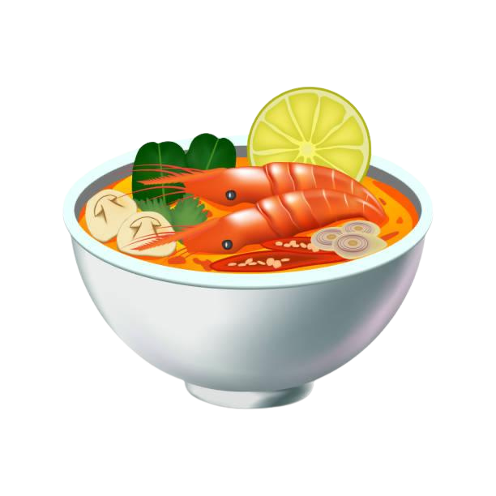

Tom Yum Soup Recipe
A spicy curry with coconut milk, green chili paste, and vegetables.
Ingredients
For the Soup Base:
- 4 cups water or chicken broth
- 2 stalks lemongrass, cut into 3-inch pieces and smashed
- 3-4 kaffir lime leaves, torn into pieces
- 3-4 slices galangal (or ginger if unavailable)
- 2-3 Thai bird's eye chilies (or to taste, smashed)
- 1 medium onion, quartered
- 3-4 medium tomatoes, quartered
- 1 cup mushrooms (shiitake, oyster, or button), sliced
- 1-2 tablespoons fish sauce (or soy sauce for a vegetarian version)
- 1 tablespoon sugar (palm sugar preferred)
- 2-3 tablespoons lime juice (freshly squeezed)
- 1-2 tablespoons chili paste (Nam Prik Pao, optional for extra depth)
For Protein (Optional):
- 1/2 lb (225g) shrimp, peeled and deveined (or chicken, tofu, or fish)
For Garnishing:
- Fresh cilantro, chopped
- Lime wedges
- Thai bird's eye chilies, sliced (optional, for extra spice)
Preparation Time
- Prep time: 10-15 minutes
- Cook time: 15-20 minutes
- Total time: ~25-35 minutes
Instructions
- Prepare the Soup Base:
- In a large pot, bring the water or chicken broth to a boil over medium heat.
- Add the smashed lemongrass, kaffir lime leaves, galangal slices (or ginger), bird's eye chilies, onion, and tomatoes.
- Let the broth simmer for about 5-7 minutes to allow the flavors to infuse. If using chili paste (Nam Prik Pao), stir it into the broth at this point.
- Add the Protein:
- If you're using shrimp (or other protein), add it to the pot and cook for about 3-4 minutes, or until the shrimp turns pink and is fully cooked. If using chicken or tofu, cook until the protein is fully done.
- If you're using mushrooms, add them at this stage to cook for the final few minutes.
- Season the Soup:
- Once the protein is cooked, stir in the fish sauce and sugar. Taste the broth and adjust the seasoning to your preference. Add more fish sauce for saltiness or sugar for sweetness, depending on your taste.
- Stir in the lime juice to give the soup its signature sour kick.
- Strain and Serve:
- If you prefer a smoother soup, you can strain out the solids (lemongrass, lime leaves, galangal, and chilies) or leave them in for a more rustic presentation.
- Ladle the soup into bowls and garnish with fresh cilantro, extra chilies (if desired for heat), and lime wedges.
Tom Yum Soup is one of Thailand's most iconic soups, known for its hot, sour, and aromatic flavors. With its bright, zesty broth and tender shrimp or protein of choice, it offers a satisfying balance of fresh herbs and spices. Perfect as a starter or main course, this soup is a comforting way to experience the bold flavors of Thai cuisine!